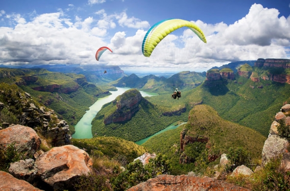
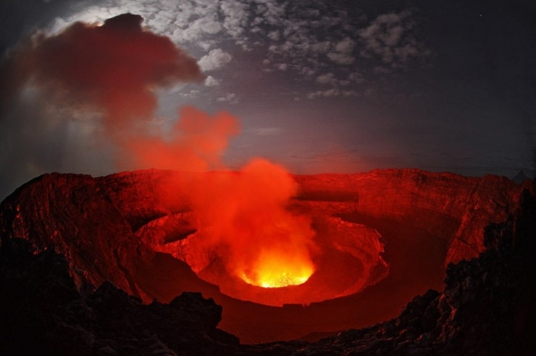
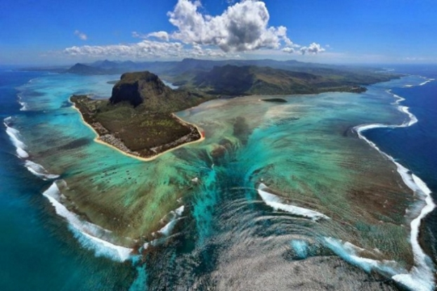

Nature reminds us that there is constant creation,
destruction and regeneration that comes with the cycle of life.

The continent has the widest variety of natural wonders, animals and plants. The diversity and versatility is so immense, you would need a lifetime to explore it all.
Mount Nyiragongo, Democratic Republic of the Congo

An active volcano is famous for housing the biggest lava lake in the world. The volcano’s slopes are steep and lava is very fluid, thus enabling it to flow in high velocity when it erupts. However, the lava lake is not constantly present.
It takes years to form and after that it is a question of days when the walls of the crater will crack and lava erupt.
Underwater Waterfall, Mauritius
The remote island in the Indian Ocean, 2,000 km (1,200 mi) away from Africa, is a very attractive tourist destination. The underwater waterfall, located on the southwestern shore, might serve as a signature of Mauritius. It isn’t an actual waterfall, but an optical illusion: the sediment of sand and silt create this dramatic site. The reason for this is that the island is relatively new and a formation of it is still present, causing an underwater slope.
